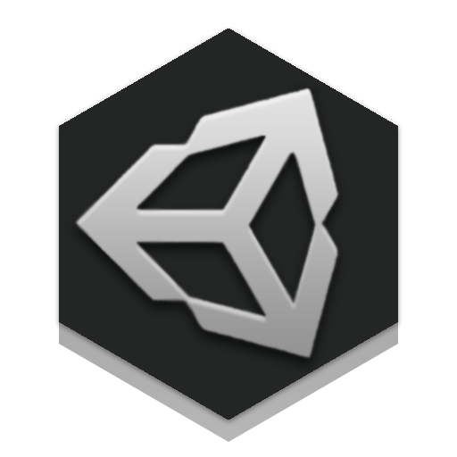
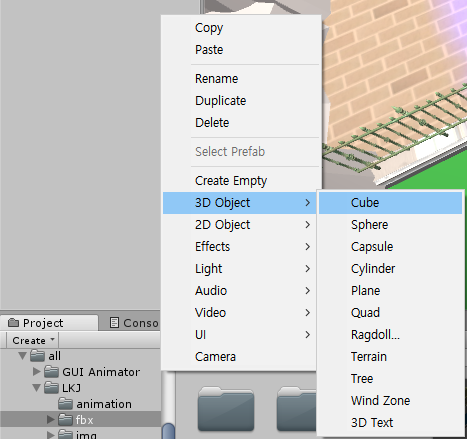

google검색

추천 자료

3d object 생성

유니티 transfrom 속성
material 사용법
prefeb 사용법
3d object 생성
유니티 transfrom 속성
material 사용법
prefeb 사용법
UNITY 3D

이 유니티 프로젝트는 제가 유니티를 처음으로 공부하며 만든 게임으로 게임의 주제는 광물을 캐서 점점 성장하는 식의 3D형태의 클리커 게임입니다.
3d렌더링을 통한 캐릭터와 애니메이션, asset을 응용한 광물, C#기반의 스크립트 를 이용하였습니다.
그것들은 3차원 좌표계(x,y,z)를 이용하며 그 이외에 유니티 라이브러리에서 물리를 적용시키면 질량을 다루기도 합니다.
Cube:정육면체
Sphere:구
Capsule:캡슐형태
Cylinder:원기둥
Plane:평면
Quad:한면만보이는 세로형 평면
Ragdoll:사람형체
Terrain:지형
Tree:나무
Wind Zone:바람 효과
3D Text:3D 글씨
위의 사진들은 Cylinder, Cpsule, Cube를 다뤄본 사진입니다. 기본적으로 유니티에서 오브젝트가 가지고있는 Transform이라는 컴포넌트는 각도(Rotation), 크기(Scale), 위치(Position)을 다룰 수 있습니다.
이 글에대한 추천자료
UNITY로 게임 만들어보기
이 유니티 프로젝트는 제가 유니티를 처음으로 공부하며 만든 게임으로 게임의 주제는 광물을 캐서 점점 성장하는 식의 3D형태의 클리커 게임입니다.
3d렌더링을 통한 캐릭터와 애니메이션, asset을 응용한 광물, C#기반의 스크립트 를 이용하였습니다.
3D object
유니티는 3D object와 2D object 등등 다양한 기본적으로 사용할 수 있는 여러가지 object를 지원해줍니다.그것들은 3차원 좌표계(x,y,z)를 이용하며 그 이외에 유니티 라이브러리에서 물리를 적용시키면 질량을 다루기도 합니다.
Cube:정육면체
Sphere:구
Capsule:캡슐형태
Cylinder:원기둥
Plane:평면
Quad:한면만보이는 세로형 평면
Ragdoll:사람형체
Terrain:지형
Tree:나무
Wind Zone:바람 효과
3D Text:3D 글씨
위의 사진들은 Cylinder, Cpsule, Cube를 다뤄본 사진입니다. 기본적으로 유니티에서 오브젝트가 가지고있는 Transform이라는 컴포넌트는 각도(Rotation), 크기(Scale), 위치(Position)을 다룰 수 있습니다.
이 글에대한 추천자료
- '3d object 생성'
- '유니티 transfrom 속성'